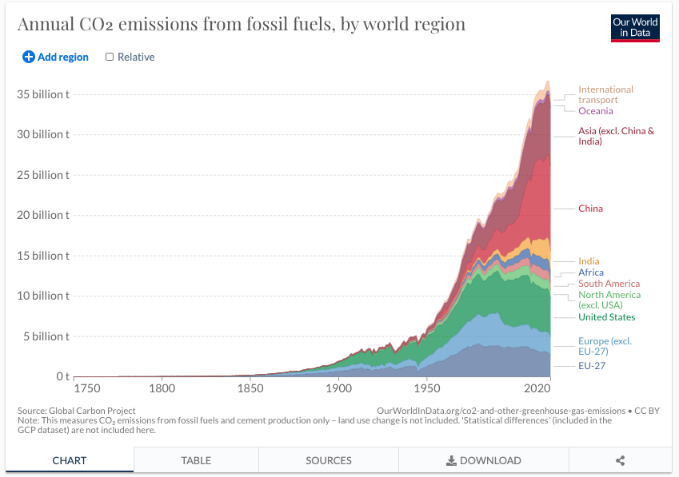
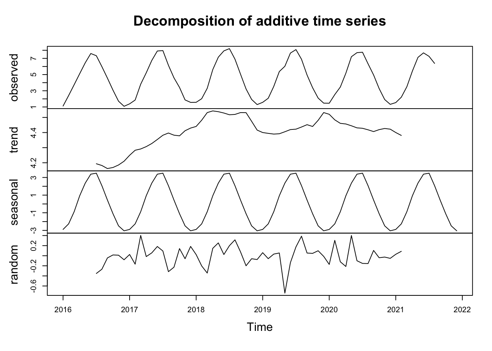
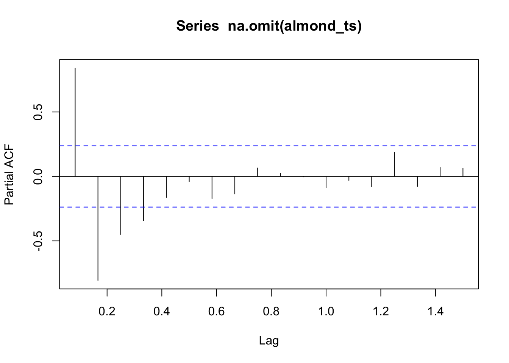
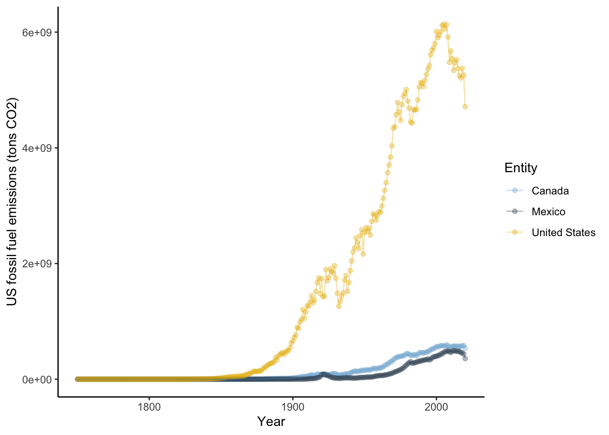
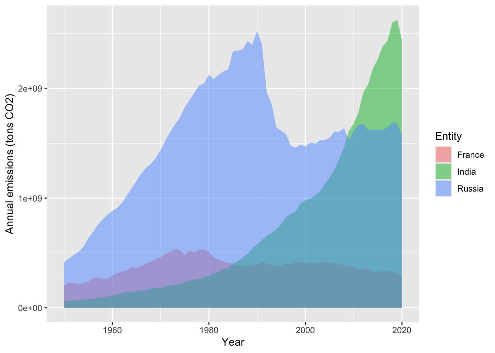

Chapter 4 Data visualization in R
by Heather Kropp for ENVST 325: Introduction to Environmental Data Science Hamilton College
4.1 Learning objectives
Fundamentals of plotting data
Plotting data in base R
Learn about different visualization techniques in
ggplot2Create visualizations that illustrate observations around anthropogenic climate change
4.3 The problem:
4.3.1 Communicating about climate change
Visualizations provide the opportunity to engage and communicate patterns in data to a wide range of audiences. With COVID-19, the term “flatten the curve” became a ubiquitous phrase in early lock down and the public discourse focused on examining increases and decreases in the non-linear peaks in graphs of daily COVID-19 cases. This type of fixation on graphical data during a crisis is hardly a new concept. Meteorologist & climatologist Jerry D. Mahlman popularized the term hockey stick graph in the early 2000s based on the Mann & Bradley reconstruction of global temperatures from the years 1000-1998.

Source: Mann & Bradley, 1999 Geophysical Research Letters Figure 1a.
The hockey stick pattern in global temperatures was widely reported in popular media and for the Intergovernmental Panel on Climate Change. The graph helped illustrate the unprecedented change in global air temperatures that was coinciding with higher CO2 levels and rising fossil fuel emissions.
4.3.2 The data
Our world in data is an organization that focuses on visualizing and sharing data relevant for a range of global issues related to climate change, pollution, poverty, and human health in order to make data and knowledge accessable. Data from researchers and organizations is compiled and visualized with the availability to download the underlying data in every graphic.

Source: Greenhouse Gas Emissions from Our World in data
In this exercise, you will work on data from Our World In Data. You will practice visualizing CO2 emissions from fossil fuels over time to track the anthropogenic driver of climate change in the tutorial. You will explore other data in your homework related to climate change and the environment.
# read in data
# cloud is always lowercase
datCO2 <- read.csv("/cloud/project/activity03/annual-co-emissions-by-region.csv") Entity Code Year Annual.CO2.emissions..zero.filled.
1 Afghanistan AFG 1750 0
2 Afghanistan AFG 1751 0
3 Afghanistan AFG 1752 0
4 Afghanistan AFG 1753 0
5 Afghanistan AFG 1754 0
6 Afghanistan AFG 1755 0Here Entity is the country, Year is the annual emissions and Annual.CO2.emissions..zero.filled. is the CO2 emitted from fossil fuels in tons. Before getting started, it will be helpful to change this column name so that you don’t have to continuously worry about typing it. You can check the names of each column using the function colnames. You can rename a column name by using the function to the left of the <-.
[1] "Entity" "Code"
[3] "Year" "Annual.CO2.emissions..zero.filled."[1] "Entity" "Code" "Year" "CO2" This new column name will be much easier to refer to. It will also be helpful to convert the entity names to a factor:
# convert the entity names to factor and store a variable with levels for
# easy reference
datCO2$Entity <- as.factor(datCO2$Entity)
# make a vector of all levels
name.Ent <- levels(datCO2$Entity)You can run the name of the vector to view all countries/territories in the data:
4.4 Fundamentals of plotting data
Visualizing data requires careful consideration of the audience and representation of the data. Many aesthetics and graphic design principles can aid in making engaging and accurate visualizations. There are several main principles to consider in visualizing data:
4.4.1 1. Representation of data
The representation of data will depend on the type of data (categorical, discrete, proportion, numerical, etc.) and the uncertainty associated with the data. Keep in mind, uncertainty may be related to measurement error or simply showing the variation or spread of the data . Typically the type of data influences the type of graph that can be used. Below are a few examples of the underlying representation of data and associated error or variation.

The choice in plot will depend on the representing uncertainty or variation (error bars, quantile boxplot), independence or ordering of variables (line versus scatter), and categorical versus numerical data (barplot, mosaic, pie).
4.4.2 2. Layout
The layout describes all of the features and arrangement of the graph including labeling, axes range, the main graph frame. The objects included for both labeling and the physical centering and balance of the elements can all fall under layout.

4.4.3 3. Encoding
Encoding deals with the symbolization and representation of data. This can be related to colors, size of points or boxes, line weight, shading, or transparency. For encoding, you will want to consider aspects such as intuitive interpretation, accessibility, and cultural meaning.

In the above graph, colors are similar to the objects in the data and the point size represents large/small values. These types of intuitive encoding help with interpretation. However, for a broad audience, color-blind friendly and high contrast color may be more favorable over colors associated with objects or meaning. You will want to choose colors that will avoid confusion with other associations (like red colors for low values). You should also keep in mind that there are limitations in the number of hues that can be readily related to a number or object by most people. This means that encoding data via shading or hue can communicate general patterns for a large range of hue values, but does not offer the more accurate assessment that position or length can convey.
4.4.4 4. Simplicity
Too many colors, crowded points, complex shapes, and overlapping text all hamper the interpretation of data. In many contexts, there can be a lot of information to convey in a limited amount of space and audience attention span. Visualization often requires coordinating with text and the venue for the visualization to narrow in on the main focus and key takeaways from the visualization. Effective titles and labels can also play a role in visualization.
4.5 Plotting data in base R
Base R can be a powerful tool for making highly customized visualization. However, the very simple forms of graphs in base R will often have a lot of characteristics that are not as aesthetically pleasing or do not follow traditional conventions to make graphs easily readable. Base R can often require many lines of code to get a professional quality graph, but it is also highly flexible. Let’s look at a simple example with the CO2 emissions data and year:

This is not an acceptable visualization. My axes labels are not informative, I can see a lot of data from different countries, but none of that information is encoded. The open points are difficult to read. In order to get more familiar with plotting, let’s start by looking at just the United States and Mexico. Let’s make two new data frames:
# new data frame for US
US <- datCO2[datCO2$Entity == "United States",]
# new data frame for Mexico
ME <- datCO2[datCO2$Entity == "Mexico",]In base R, you will have to work to add different colors or shapes to points to encode for differences in country. You will have to add each country to a plot seperately. Let’s start with the US:
# make a plot of US CO2
plot(US$Year, # x data
US$CO2, # y data
type = "b", #b = points and lines
pch = 19, # symbol shape
ylab = "Annual fossil fuel emissions (tons CO2)", #y axis label
xlab = "Year") #x axis label
You’ll also note that some of the y axis ticks are cut off because the plot window is too small and the labels are flipped in a hard to read direction. R doesn’t offer a lot of axes arguments within the plot function, but we can turn them off and add them separately with the axis function. You can turn all axes off in plot using the axes=FALSE argument or individual axis off. In this case, the x axis looks good so need to change it. yaxt = "n" turns off just the y axis. The axis function allows you to specify where ticks go and what label to use. It would be helpful to change our units to billons of tons rather than just tons to better read the graph.
# make a plot of US CO2
plot(US$Year, # x data
US$CO2, # y data
type = "b", #b = points and lines
pch = 19, # symbol shape
ylab = "Annual fossil fuel emissions (billons of tons CO2)", #y axis label
xlab = "Year", #x axis label
yaxt = "n") # turn off y axis
# add y axis
# arguments are axis number (1 bottom, 2 left, 3 top, 4 right)
# las = 2 changes the labels to be read in horizontal direction
axis(2, seq(0,6000000000, by=2000000000), #location of ticks
seq(0,6, by = 2), # label for ticks
las=2 )
You can add additional points with any color or symbolization, and this is the easiest way to show multiple groups of data with different encoding.
# make a plot of US CO2 ----
plot(US$Year, # x data
US$CO2, # y data
type = "b", #b = points and lines
pch = 19, # symbol shape
ylab = "Annual fossil fuel emissions (billons of tons CO2)", #y axis label
xlab = "Year", #x axis label
yaxt = "n") # turn off y axis
# add y axis
# arguments are axis number (1 bottom, 2 left, 3 top, 4 right)
# las = 2 changes the labels to be read in horizontal direction
axis(2, seq(0,6000000000, by=2000000000), #location of ticks
seq(0,6, by = 2), # label for ticks
las=2 )
# add mexico to plot ----
# add points
points(ME$Year, # x data
ME$CO2, # y data
type = "b", #b = points and lines
pch = 19, # symbol shape,
col= "darkgoldenrod3")There are a few last helpful functions in base R plots. You can change the axis range so that it shows more or less values. In this case, slightly increasing the y axis might help add a little space. YHere the xlim and ylim arguments change the range of the axes. These arguments expect a vector of two numbers: ylim = c(minimum value, maximum value). This tells R the range on the axis to plot. You need to add a legend to properly label the plot. For the legend function, you specify a position for the legend. You can either specify and exact x,y coordinate or you use an argument for a more general position such as: topleft, center, bottomright. The bty argument is related to drawing a box around the legend. Setting that argument to "n" ensures you are rid of such a distracting feature.
# make a plot of US CO2 ----
plot(US$Year, # x data
US$CO2, # y data
type = "b", #b = points and lines
pch = 19, # symbol shape
ylab = "Annual fossil fuel emissions (billons of tons CO2)", #y axis label
xlab = "Year", #x axis label
yaxt = "n", # turn off y axis
ylim = c(0,6200000000)) # change y axis range
# add y axis
# arguments are axis number (1 bottom, 2 left, 3 top, 4 right)
# las = 2 changes the labels to be read in horizontal direction
axis(2, seq(0,6000000000, by=2000000000), #location of ticks
seq(0,6, by = 2), # label for ticks
las=2 )
# add mexico to plot ----
# add points
points(ME$Year, # x data
ME$CO2, # y data
type = "b", #b = points and lines
pch = 19, # symbol shape,
col= "darkgoldenrod3")
legend("topleft",
c("United States", "Mexico"),
col=c("black", "darkgoldenrod3"),
pch=19, bty= "n")
4.6 Plotting in ggplot2
4.6.1 Intro to ggplot
ggplot2 is a package that allows for fast, aesthetically tasteful and efficient plots with nicely formatted axes. In only a few lines of code, you can have a high quality graph much quicker than base R. It has built in functions that are useful for a wide range of plots. You will want to install and load ggplot2
Once the package is installed, you will need to load the package into your current session using the library function.
ggplot2 has developed a different plotting syntax than base R. The language of ggplot2 means that you declare the data that you are using, the coordinate system (specified via ggplot), and the geometry (specified with geom_) to be used in the plot. The data refers to the data source and the aesthetics. In the aesthetics you define the x, y coordinate specifications and any other information on the size or colors to be used. The coordinate system specifies how to plot the data graphically. By default it refers to a cartesian coordinate system which simply means plotting on a x,y axis. You don’t need to specify this plotting component if you are making a caresian graph. The geometry refers to the shapes/type of plot to be used (ex: bars, boxes, points). You can find a cheat sheet for ggplot2 here: https://github.com/rstudio/cheatsheets/blob/master/data-visualization-2.1.pdf
Let’s get a feel for using ggplot by looking at the annual precipitation across years for all of the sites. You’ll notice that ggplot2 also uses + signs to connect multiple functions that specify the coordinates and the geometry in the same plot. This is unique to this type of package and other packages made by the same developers.
Let’s take a look at basic code using the US emissions:
ggplot(data = US, # data for plot
aes(x = Year, y=CO2 ) )+ # aes, x and y
geom_point()+ # make points at data point
geom_line()+ # use lines to connect data points
labs(x="Year", y="US fossil fuel emissions (tons CO2)") # make axis labels
You’ll notice a legend is automatically made and the y axis labels are in the right direction. The style (gridlines, background) can be changed via the theme. theme_classic will make a plain graph. In the cheatsheet, you can see there are other types of themes.
ggplot(data = US, # data for plot
aes(x = Year, y=CO2 ) )+ # aes, x and y
geom_point()+ # make points at data point
geom_line()+ # use lines to connect data points
labs(x="Year", y="US fossil fuel emissions (tons CO2)")+ #axis labels
theme_classic()
You can also show many different groups with different encoding. The color argument in ggplot allows you to specify groupings that should have different colors displayed. Lets make a North America emissions data frame and inspect this closely:
# subset data for just
NorthA <- datCO2[datCO2$Entity == "United States" |
datCO2$Entity == "Canada" |
datCO2$Entity == "Mexico", ]
ggplot(data = NorthA, # data for plot
aes(x = Year, y=CO2, color=Entity ) )+ # aes, x and y
geom_point()+ # make points at data point
geom_line()+ # use lines to connect data points
labs(x="Year", y="US fossil fuel emissions (tons CO2)")+ # make axis labels
theme_classic()
4.6.2 Changing colors
It also would be helpful to change the colors and make them semi-transparent so we can see what sites overlap a little better. You can manually change the colors in Rstudio using the scale_color_manual setting. Note in R, you can enter colors as color names: such as “tomato3”, the hex code, or you can use the rgb() function to designate the amount of red, green, and blue that goes into making a color. There are a lot of color resources online that can help you pick colors. If you search for the color tomato3 in google, you will get results from color websites that give the hex codes or the red,green, blue composition. In the case of tomato3, the hex code is #CD4F39 and the red, green, blue composition is rgb(0.8, 0.31,0.22). You can find more information on color theory and colors in R here: https://www.nceas.ucsb.edu/sites/default/files/2020-04/colorPaletteCheatsheet.pdf
# subset data for just
NorthA <- datCO2[datCO2$Entity == "United States" |
datCO2$Entity == "Canada" |
datCO2$Entity == "Mexico", ]
ggplot(data = NorthA, # data for plot
aes(x = Year, y=CO2, color=Entity ) )+ # aes, x and y
geom_point()+ # make points at data point
geom_line()+ # use lines to connect data points
labs(x="Year", y="US fossil fuel emissions (tons CO2)")+ # make axis labels
theme_classic()+
scale_color_manual(values = c("#7FB3D555","#34495E55", "#E7B80055")) #specify colors using hex codes that include transparency
4.6.3 Exploring different visualizations in ggplot2
One of the largest considerations in data visualizations is using the proper type of geometry to display data. Let’s look at making different types of plots in ggplot2.
4.6.4 Violin and box plots
Violin plots are a way to display data across categories in a manner that conveys more information than a barplot of means. The violins are created using a mirrored histogram of the data that is smoothed out into a line. Each distribution is displayed around the name with wider parts of the violin representing values on the y axis that occur more frequently within a group. Typically violins are paired with a boxplot in the violin to show the quartiles, median, and 95% range within the distribution. In ggplot2, violin plots are easy to make. Let’s focus on minimum temperatures for this next part. Let’s take a look at the annual emissions across three countries India, France, and Russia since 1950. Here you simpily want to look at the range of emissions in each country rather than think about temporal trends.
# subset CO2 to meet conditons
compCO2 <- datCO2[datCO2$Year >= 1950 & datCO2$Entity == "France" |
datCO2$Year >= 1950 & datCO2$Entity == "India" |
datCO2$Year >= 1950 & datCO2$Entity == "Russia" , ]
ggplot(data = compCO2 , aes(x=Entity, y=CO2))+ # look at CO2 by country
geom_violin(fill=rgb(0.933,0.953,0.98))+ # add a violin plot with blue color
geom_boxplot(width=0.03,size=0.15, fill="grey90")+ # add grey
#boxplots and make them smaller to fit in the violin (width)
#than normal with thinner lines (size_ than normal
theme_classic()+ # get rid of ugly gridlines
labs(x = "Country", y="Annual emissions (tons CO2)")4.6.5 Area and ribbon plots
It can often be helpful to view line graphs with area under the data to help convey the magnitude of the of the data. A area geometry can help visualize the cumulative values between multiple lines. Let’s see the impact on three countries with very different trajectories in recent decades. Let’s focus on France, India and Russia since 1950.
A ribbon geometry simply shows the area between a minimum and maximum y value. This will not be cumulative. In this case, it would be helpful to visualize how far above zero the emissions are. Extending the area under the line can help visualize how much each country varies from zero. Given the ribbons for three countries are likely to overlap, it is a good idea to add transparency using the alpha function. If you look up the documentations on geom_ribbon, you will find more than one y argument is needed. You need to specify to start of the ribbon (ymin) and the upper value (ymax). You can set a single value. In this case, let’s shade the area from zero to the annual emissions.
ggplot(data=compCO2,
aes(x=Year, ymin=0, ymax=CO2, fill=Entity))+ #fill works for polygons/shaded areas
geom_ribbon(alpha=0.5 )+ #fill in with 50% transparency
labs(x="Year", y="Annual emissions (tons CO2)")
4.6.6 Labels
A striking pattern sticks out in the Russia fossil fuel emissions. Visually, it looks like a large drop in emissions corresponds with the end of the soviet union. You think a label would be useful for your audience for the context. Let’s take a closer look at adding individual or limited amounts of labels (not labeling every point because that is rarely useful). The function annotate allows you to add label lines, label text, and even polygons that can draw attention to an area. The first argument of the function geom allows you to specify a "segment" (line), "text (characters to add), and "rect" (rectangular polygon). Let’s add both the text and a line for a label that marks the end of the USSR in 1991. Although the dissolution started several years prior before 1991, for simplicity we will designate the final year.
A helpful feature of ggplot is that you can name a graph and refer to it later. This can be helpful for keeping your plot code easy to read. Let’s start with the ribbon graph as a base and add more labelling:
b <- ggplot(data=compCO2,aes(x=Year, ymin=0, ymax=CO2, fill=Entity))+
geom_ribbon(alpha=0.5 )+
labs(x="Year", y="Carbon emissions (tons CO2)") +
theme_classic()Next let’s add the label with the line and text:
b + annotate("segment", # line label
x=1991, # start x coordinate
y=2450000000, # start y coordinate
xend=1991, # end x coordinate
yend=2600000000) + # end y coordinate
annotate("text", # add text label
x=1991, # center of label x coordinate
y= 2700000000, # center of label y coordinate
label="end of USSR") # label to addThere are too many different types of plots in ggplot to review everything in this tutorial. Once you are used to the format of arguments of ggplot, you can explore the many other types of geometries and features.
A final note about ggplot is that there are philosophies about data visualization and data organization that impact your plotting capabilities. ggplot does not allow for multiple y axes and data is best formatted in long form where all x and y observations in one column and a third column that gives a label for different groups if additional encoding is to be used.
4.7 Conclusions
You can see from the tutorial that visualization can be a key part of communicating climate change. The visualizations in the tutorial highlight the non-linear increase in CO2 emissions since the mid 20th century. Emissions have started to decline in recent years in some countries, but overall emission levels remain high and vary by country. You can see how your visualizations present different stories about emissions data. Ribbon and line plots show trends of increasing and decreasing emissions over time for different countries. An area plot shows cumulative emissions with countries contributing different proportions over time. A violin plot helps compare the spread of emission levels between different countries. The reduction in emissions is the main focus of international policy and global reductions in emissions is the goal of many agreements. Visualizations of emissions over time help chart out the magnitude and trends of continued contributions to anthropogenic climate change that will be seen in future global temperatures.
4.8 Citations
Mann, Michael E., Raymond S. Bradley, and Malcolm K. Hughes. “Northern hemisphere temperatures during the past millennium: Inferences, uncertainties, and limitations.” Geophysical research letters 26.6 (1999): 759-762.
Data from Global Carbon Budget - Global Carbon Project (2021) Via Our World in Data. Novemeber 2021.